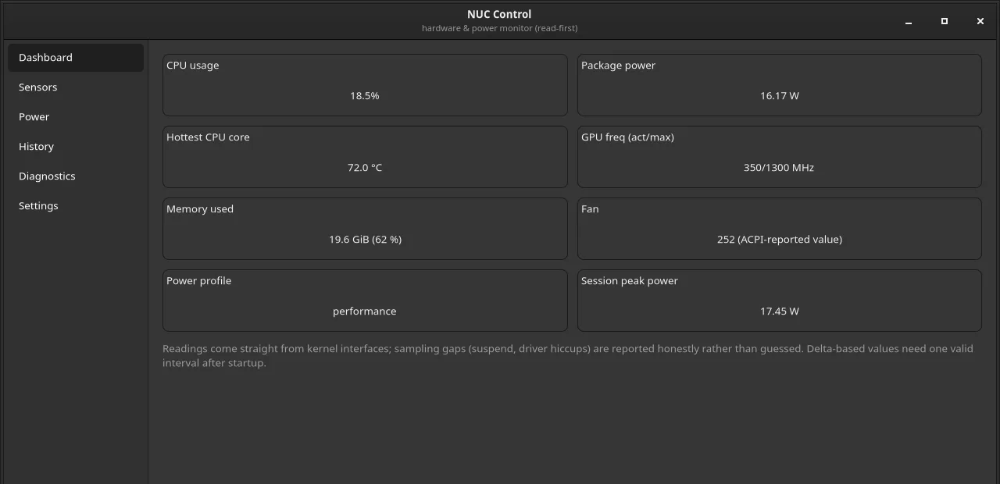
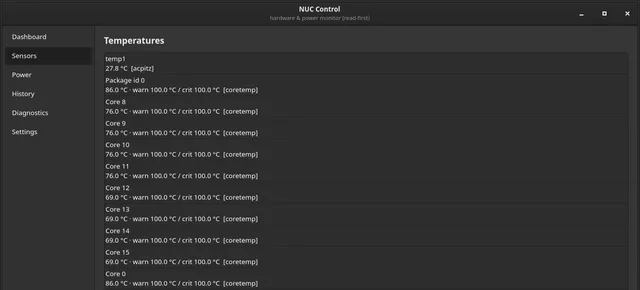

Dashboard
Eight tiles: CPU usage, package power, hottest core, GPU frequencies, memory, fan, power profile and session peak power.
NUC Control is a native Linux app and command line tool that reports what the hardware actually exposes: temperatures, CPU and GPU state, power draw, NVMe health and a history chart. When a value is not available, it says so instead of guessing.

NUC Control reads kernel interfaces and system services and labels every value honestly. It never invents a number and never touches fan or thermal protection.
Eight tiles: CPU usage, package power, hottest core, GPU frequencies, memory, fan, power profile and session peak power.
One row per kernel temperature and fan sensor, with warning and critical limits and alarm flags as reported by hwmon.
See the active profile and switch it through power-profiles-daemon. The switch is confirmed by reading the daemon's answer back.
A live chart of the session plus a WAL-mode SQLite history with per-minute aggregates and automatic pruning.
SMART health through UDisks2, with an honest refusal for devices that do not report it.
Read-only checks across system, thermal, CPU, GPU, power, storage and services, with exportable Markdown and JSON reports.
Desktop notifications for CPU or NVMe temperature, fan fault and throttling, debounced with hysteresis and a cooldown.
The nuc-control command prints any section as text or JSON, for scripts and quick checks.
nuc-control --sensors --jsonSix pages: Dashboard, Sensors, Power, History, Diagnostics and Settings.


| Area | Status |
|---|---|
| MSI PRO RPL-U Cubi NUC 1M (MS-B0B1) | Verified: Intel Core 7 150U, Debian forky/sid, kernel 7.2.12, GNOME and KDE on Wayland. |
| Other Linux machines | Not verified. Missing sensors appear as Unavailable rather than as zero, but other hardware has not been tested. |
| Fans | This platform exposes only an ACPI fan interface, so there is no fan control and the app says so. |
| GPU utilization | Needs CAP_PERFMON for intel_gpu_top. Without it the app reports that it needs authorization instead of guessing. |
NUC Control has no prebuilt package yet. Build the .deb on a native amd64 Debian or Ubuntu machine with GTK 4.10 and libadwaita 1.4 or newer.
sudo apt install git build-essential dpkg-dev
git clone https://github.com/mikeholp87/msi-control-linux
cd msi-control-linux./scripts/build-deb.shRuntime library dependencies are derived from the built binaries with dpkg-shlibdeps.
sudo apt install ./target/debian/nuc-control_*_amd64.deb
nuc-guiOr run nuc-control --help for the command line. Profile switching needs power-profiles-daemon and NVMe health needs UDisks2.
The only write is a power profile switch, authorized by polkit through power-profiles-daemon and checked afterwards.
A missing value shows as Unavailable in the app and null in JSON. Cached firmware readings are labeled with their age.
No root daemon, no background service installed by default and nothing sent off your machine.
No. It never modifies fan or thermal protection. The only thing it can change is the power profile, through power-profiles-daemon.
It is verified on one MSI Cubi NUC. On other hardware it should report what the kernel exposes and mark the rest Unavailable, but that is untested.
Reading GPU utilization with intel_gpu_top needs CAP_PERFMON. The app does not run as root, so it tells you that instead of showing a made-up number.
Settings in ~/.config/nuc-control/config.toml and history in ~/.local/share/nuc-control/history.db. Recording raw samples is opt-in.
Open an issue on GitHub.